南洋理工大学 · Attic-KV：用自我测验决定极小缓存该保留什么
- 论文：Rehearse Everything, Remember Nothing: Attic-KV Rehearses What Will Be Read
- 作者：Zhiyun Shi；第一作者机构：Nanyang Technological University（南洋理工大学）。
- 发布：2026-10-08，arXiv v1；阅读日期：2026-10-12。
- 方向：LLM、长上下文、查询无关的一次性 KV 压缩。
- 论文入口：arXiv:2610.12133。
- 代码/项目：本轮未核验到独立代码链接。下述数据为作者论文报告，未做独立复现。
文档先进入缓存，问题可能几天后才到来；压缩器需要提前决定保护哪些信息。Attic-KV把这项选择交给两种代理阅读：引用原文的自我问答，以及随内容密度改变长度的锚点排练。下面先说明极小预算为什么改变了重读全文的价值，再按原文原则和实现顺序解读方法。
很多 KV 缓存必须在任何人都不知道未来会问什么之前就完成压缩；在极小保留预算下，重读完整上下文会把预算分散到全文，挤掉未来问题真正需要的少量事实。
1. 背景和问题
这篇论文研究的不是正在回答某个具体问题时如何动态淘汰缓存，而是一个更早发生的决定：文档入库、共享前缀准备好、长对话被归档时，就要确定它们今后留下哪些键值。检索系统可以为文档提前做预填充，后来不同用户命中同一文档时复用缓存；服务系统可以让很多请求共享长系统提示；助手也可能把某次工具返回保存成以后会再次读取的记忆。压缩时看不到后续问题，因此压缩器必须只依据文档构建一个固定子集，此后所有查询共同使用它。这个约束适用于同一缓存服务多个后续请求。这个条件让答案相关性变成未知量：当前觉得重要的内容，不一定就是未来会问的内容。
作者选择的预算相当激进，主要保留百分之五，并测试百分之三。理想化地说，如果缓存之外的开销可以忽略，保留百分之五意味着相同内存可以存二十份文档缓存，而百分之三十只够约三点三份。这个换算仅是缓存容量比值，不能直接解释成吞吐增长二十倍；总显存还包含模型权重、运行缓冲和服务元数据，稀疏访问方式也会改变实际延迟。论文强调极端压缩有明确系统动机，同时也要求比通常的温和压缩更仔细地选择内容。预算较宽时很多方法都能容纳关键事实，真正暴露排序缺陷的是只有少量位置能够存活时。
主流排练评分把文档缓存看成一组可以被注意力访问的候选。模型在完整缓存上再次处理一段排练文字，根据这些文字回望文档时给各键值的注意力打分，再保留高分项。完整重读以原文作为排练目标，直觉是看得越全就记得越全；固定比例的锚点排练则在节约计算的同时选一些看起来突出的词。作者质疑的是排练内容的目标，而不是先换一个更复杂的分数函数。对于有限预算，完整重读可能平均保护了流畅叙述，却没有特别保护姓名、日期、数值和绑定关系。压缩器最后保存的是排练要求它反复读取的东西，并不自动等于未来任务需要的东西。
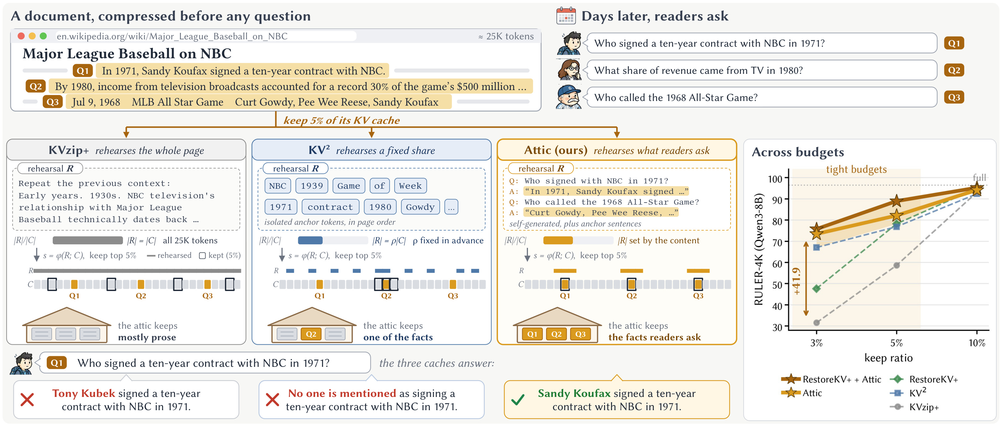
原图用一篇约两万五千词元的棒球电视转播文档把这个矛盾具体化。文档先被压缩，几天后才出现关于签约人、电视收入比例和解说员的问题。三个面板的差别是压缩阶段排练什么：重读整页，读取固定份额的零散锚点，或者先生成可能的问题并引用文档回答，再结合锚点。完整重读不是没看见事实，而是事实同大量叙述共同争夺同一个百分之五预算；固定锚点也可能抓到某项信息却丢掉另一些绑定关系。图下方的模型输出表明，关于一九七一年签约人的同一个问题，三种压缩结果分别给出错误人物、声称没有提到人物和正确人物。这些输出是作者展示的具体案例，不能当成所有文档的失败率统计。右侧预算曲线进一步提供聚合实验背景：预算收紧时方法差距拉开，宽松时趋近。整张图的文档句子和问答文字属于原图对象，展示的是信息选择过程；读者应把案例、机制主张与平均分实验分开判断。图中另外把三种排练覆盖位置与最终百分之五缓存位置画成两行，强调排练规模和保留规模是不同变量：可以排练很多词，最后仍只能存很少条目。单个例子的正确回答不能证明三问全部都稳定保留，也不能证明文档中没有展示的其他事实都能回答。作为背景图，其价值是展示错误怎样产生，以及为什么模拟答案读出比平均重读更贴近目标；因果和泛化还要看后续诊断与测试数据。
这个案例还有一个容易误读的地方。标题说排练未来会被读取的内容，并不代表方法提前知道真实未来问题。可部署实现只让模型根据当前文档猜测读者可能提出哪些问题，再引用原文作答；它预测的是读出形式和内容分布。真正拿到标准问题及标准答案的版本只在诊断实验中充当 oracle，用来检查百分之五的缓存是否有足够容量。oracle 的作用是说明损失至少部分来自选择目标，而不能作为上线流程。实际方法依然要面对遗漏罕见问题、错估文档用途和跨多个片段组合信息的风险。
论文把问题分成两个自由度：排练的内容，以及排练的数量。一篇长叙事中可能只有几个问得出的事实，一张列表则几乎行行都能形成问题。统一排练全文相当于把两类文档按相同密度处理；统一排练固定比例又会让事实密集的表格排练不足。Attic 的贡献是同时调整这两件事：用自我问答模拟未来会怎样读出答案，用锚点所在句子的长度估计本块有多少值得排练的内容。方法仍属于排练评分路线，宿主评分和最终淘汰规则保持原样，因此可以把收益与替换评分器、加入训练后的恢复令牌区分开。
理解范围也很重要。论文并未覆盖所有长上下文任务，主要基准是人工构造的检索/聚合任务、自然语言长文任务和同文档多问题回答。它不直接证明多轮交互中持续更新记忆的可靠性，也不证明检索文档缓存可以跨任意模型共享。一次压缩、多次查询是评估设定而非已部署服务。尽管作者从“保留什么”得到很强的机制解释，证据仍限于所测模型、数据和保留比例。把结论理解为“排练目标可以是压缩效果的重要瓶颈”，比理解为“全文重读必然没有价值”更贴近实验。
背景部分还需要区分缓存选择与文本摘要。文本摘要把原文改写成更短的文字，再建立新的缓存；Attic保留原文产生的部分键值，用问答作为评分探针而不是替换原文。因而它可以保留某些原文隐状态中的细节，也会因层头选择丢失读出所需的组合信息。理解这一点有助于解释为何同样保留比例下，句子覆盖率、词元覆盖率与答案条目存活比例不是同一个指标。论文的诊断跨全部层头统计答案条目，避免把表面上还剩几个词直接当成模型还能回答的问题数。
2. 方法
2.1 原文原则一：排练将被读出的内容
先明确目标函数。一个文档预填充后，在每个层、每个 KV 头和每个词元位置都有键值条目，压缩器在所有层与头之间联合排序，只保留固定份额。这意味着同一文档中不同层、不同头可以选择不同位置，并不要求原文位置在全部头共同存活。它与逐头固定额度的保留设定有差异，复现应明确采用全局条目预算。论文原式可以写为：
符号解释：$C$ 是文档，$\mathcal E$ 是全部键值条目的集合，$\mathcal S$ 是保留子集，$r$ 是保留比例，$\mathcal Q_C$ 是尚未知晓的未来问答分布，$f$ 是模型，$U$ 是任务指标。这个形式提醒我们，压缩时无法直接优化真实查询的期望表现，因为未来查询分布未知。排练是一种代理：希望模型在现在读出的信息足够接近以后读出的信息。条目按层、头、位置分别计数，也意味着保留百分之五的键值并不等价于整齐保留百分之五原文词元。
默认宿主采用归一化注意力的最大值：
符号解释：$R$ 是排练文字，$l,h,i$ 分别标识层、KV 头和文档位置，$t$ 是排练词元，$\mathcal G(h)$ 是共享该 KV 头的查询头，$\widetilde a$ 是 KVzip+ 归一化后的注意力权重，$\operatorname{Top}_r$ 取全部条目中前 $r$ 份额。归一化考虑值经过输出投影后的贡献大小，并相对于排练词元隐藏状态缩放；所以它不只是未经处理的注意力大小。使用最大值意味着，只要某个排练词元强烈访问某个条目，该条目就有机会被保护。
作者的关键控制实验是只排练问题和排练问题加答案之间的区别。问题本身可能把注意力指向键，生成答案时才会指向对应值；只写“谁签了合同”与接着引用“某人签了合同”并不提供同样的访问轨迹。因此实际方法先在完整文档缓存上生成六个读者可能问的问题，每个答案都要求引用文档原句，总输出至多二百五十六词元；然后在一个简短标题之后把这组问答重新放到缓存上排练。生成和排练是两步：前者构造代理读出，后者用读出诱导条目分数。生成采用贪心解码，问答生成发生在压缩之前，因此不依赖已经丢失的信息。
要求引用原文降低了生成虚构答案的空间，但它不是形式化的引用校验器。模型可能选错问题，也可能截断答案或引用与问题不对应的句子；论文给出统一提示，没有宣称逐项验证所有引文。对一篇事实繁多的长文，六问与输出长度上限也不可能覆盖每一项事实。因此问答是一条补充通道，不能独自解决内容覆盖。另一条锚点通道保留更多不被六问覆盖的信息，两条通道合并后再执行宿主的评分和保留规则。
2.2 原文原则二：按内容确定排练量
Attic 不新增一个需要按模型、基准反复调节的排练比例，而把最初锚点数量直接设为缓存保留比例。文档按四千零九十六词元分块，各位置用 KeyDiff 分数排序。原文表达为：
符号解释：$\kappa_i$ 是位置分数，$\mathbf k_i^{l,h}$ 是键，$\overline{\mathbf k}^{l,h}$ 是文档平均归一化键，$H$ 沿用原文的归一化记号，$C_j$ 是第 $j$ 个块，$\mathcal A_j$ 是该块的锚点位置。分数越高表示与平均键方向越不相似。它是一种几何异常性信号，不是由事实标签训练出的重要性分类器；这个区别解释了为什么作者同时测试语义事实清单和几何锚点。笔记保留原文归一化形式，不擅自把它改写为另一种层头平均实现。
数量由含锚点的句子来估计：
符号解释：$\operatorname{Sent}(C_j)$ 表示该块按标点或换行划出的句子，$m_j$ 是至少包含一个锚点的句子的词元总数，$R_j$ 是从整块选出分数最高的 $m_j$ 个位置后按原文顺序恢复得到的排练序列，$\operatorname{Order}_C$ 表示按文档位置排序。这是对原文算法的集合化写法。特别要区分：句子用于测量排练数量，实际排练并不直接把这些句子整句搬过来。把这一步误写成“保留锚点所在完整句子”会改变方法。
如果锚点集中在少量句子，估计量较小；如果表格或记录列表让锚点分散到很多行，估计量较大。作者用包含句点、问号、感叹号或换行的词元作为句子终点，这个简单规则能在其文档上工作，却可能受表格格式、代码换行、缩写和语言标点影响。数量自适应也不意味着量越多越好：原文顺序让排练在局部上下文中形成连贯文本，模型会主要回看局部无法预测的实体和数值，而不是为可预测结构反复访问原缓存。附录进一步说明打乱成多个稀疏遍次虽然能保护编号标签，却会让答案事实失去保护。
2.3 原文 Attic：合并排练并复用宿主
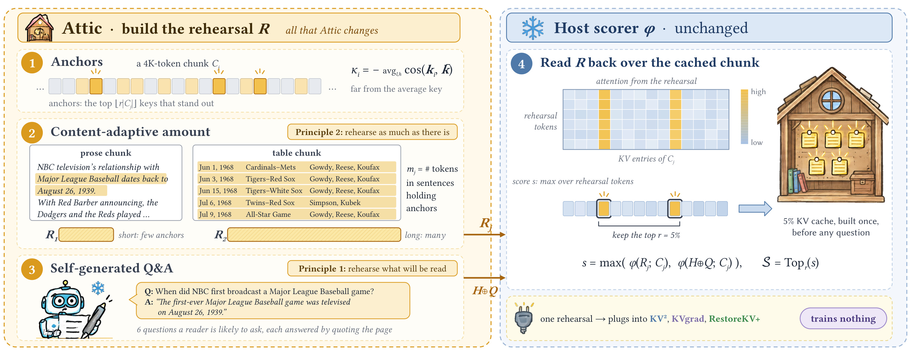
这张框架图把实现边界画得很清楚。左侧都是 Attic 改动的排练生成过程：锚点表示哪些键偏离平均键，句子覆盖的长度决定扩展到多少高分位置，模型生成引用原文的六组问答。右侧则是没有更换的宿主评分器，排练回望块缓存后产生分数，最终按保留比例选条目。中间两条箭头分别对应锚点序列与带标题的问答，说明方法不是把问答塞进最终缓存当成新的知识摘要，而是用它们引导原有键值的保留。图里散文块和表格块的不同长度表达内容密度假设，不能把它理解为已经有一个精确的事实密度识别器。图中的热图是论文用于说明注意力的示意对象，笔记仍裁自原始PDF，没有生成替代图。可选恢复令牌位于保留之后，因此与选取哪些位置属于不同作用层次。整个流程同时保留“一次构建”和“未来查询共享”的约束：压缩阶段使用完整缓存生成代理问答，真实查询来到时只读取已经筛选的缓存。框架中没有真实测试答案输入，这一点是区分可部署方法与诊断oracle的关键。从输入输出顺序看，几何锚点先产生位置集合，数量估计产生整数预算，随后位置集合扩大并按文档顺序组成文字，最后才进入宿主评分。六组问答则从完整文档独立生成，再对每个块评分；它不是逐块重新得到六问，因此长文的全局问题可能无法覆盖每一块。将两条分数取最大值也保留了宿主的归一化尺度约束，工程上应确认不同排练通道的分数可比较。图中缓存小屋强调最终存储对象仍是原键值而非六条答案。
两条排练在每个条目上取最大值：
符号解释：$\phi$ 是宿主评分函数，$Q$ 是生成的问答，$\mathcal H$ 是说明这些问答来自前文的标题，$\oplus$ 表示拼接，$s_j$ 是当前块条目分数，$s$ 汇集各块分数后用于全局筛选。最大值使任一通道强访问到的条目都能被保护，但也意味着两条通道仍争夺同一总预算；问答数量或覆盖改变后，分数分布可能变化。原文算法先把所有分数初始化，再按块更新，最后在全部层头上联合选取，不是每个头独立保留固定数量。
独立 Attic 使用与 KV2 相同的锚点和默认注意力评分；KVgrad 加 Attic 则保留原宿主的梯度归因，把新的排练按最多二百五十六词元切片评分，并逐元素取最大值。RestoreKV+ 加 Attic 把官方发布的八个恢复令牌和 LoRA 适配器接在 Attic 选择出的缓存上，不重新训练。“训练无关”描述的是 Attic 的选择过程；组合使用已经训练过的恢复令牌时，整个系统仍包含训练产物。两者并不矛盾，也不能把组合结果拿来证明没有训练组件的纯 Attic 达到了同样分数。
训练与推理边界因此可以分开看。Attic 本身没有优化新的模型参数，压缩时仍有生成问答、锚点计算、排练和评分成本。缓存构建完成后，真实问题沿已有模型推理路径读取稀疏缓存；是否支持高效不规则位置读取取决于宿主实现。作者在同一 kvpress 框架和模型中比较，能够减少实现差异，却还没有验证独立生产服务的批处理、并发和缓存更新场景。方法可以替换宿主排练目标，并不意味着对所有 KV 压缩算法都能无修改插入。
3. 实验结果
3.1 诊断：预算到底流向了哪里
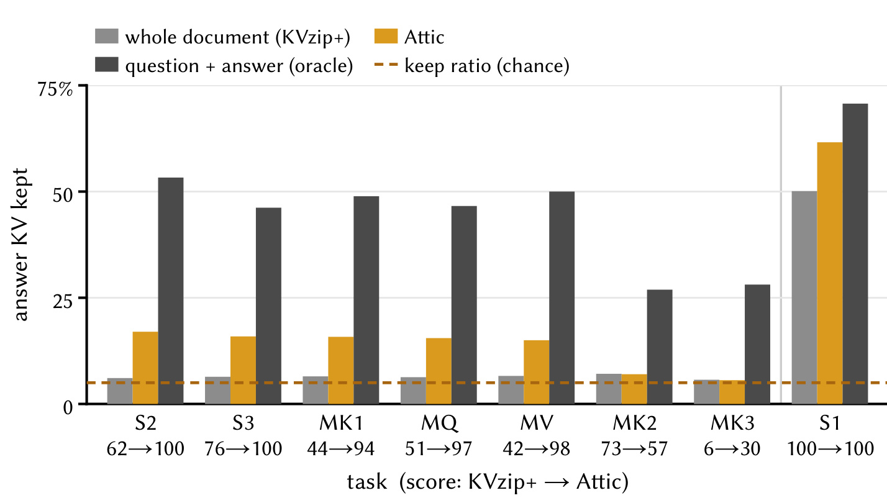
这张图测量的是答案在各层、各头上的键值条目存活比例，使用 Qwen3-8B、RULER-4K 开发划分与百分之五预算。虚线是随机均匀选择时约百分之五的基准。全文重读在八类针检索任务中的七类只留下约百分之五点七到七点一的答案条目，几乎没有特别保护答案；Attic 在它能解决的几个任务上提高到约百分之十五到十七。灰黑色oracle直接排练标准问答，能保留更多答案条目，但只提供容量诊断。图也诚实展示失败：多键第二、第三类任务依然保留不足，不能从其他任务的提升推断复杂绑定都已解决。单针第一类是特殊例外，因为重复的背景容易预测，重读时注意力反而集中到不易预测的针。这里证据支持的是排练内容和答案保留的关联，不是所有自然文档中已验证的因果定律。图下任务得分箭头也揭示了例外：多键第二类从七十三降到五十七，尽管多数单针任务提高到满分。因此不能只根据橙色柱更高宣称所有绑定关系都受到保护，答案存活率必须与该任务实际得分共同判断。
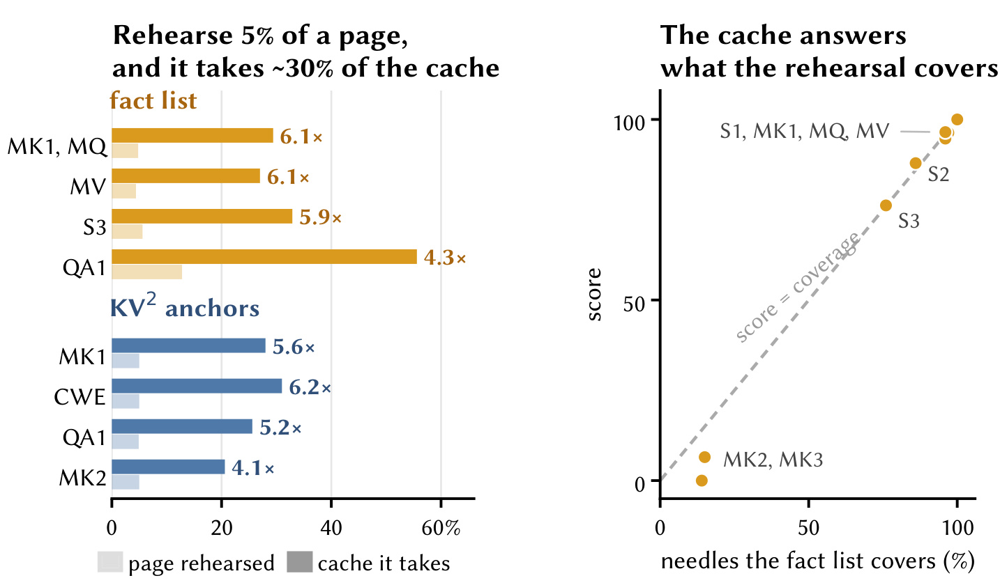
左图把排练覆盖文档的份额与最终保留缓存中落在这些位置的份额比较。语义事实清单和几何锚点原理不同，却都出现富集：在事实稀疏任务中，约百分之四点四到五点六的位置能吸引百分之二十点六到三十二点九的保留预算，倍数约四点一到六点二。右图观察只排练事实清单时，任务分数随针事实覆盖率变化；覆盖多的任务得分高，清单漏掉大量绑定事实的任务很差。两部分共同支持排练目标会决定预算去向。这个分析在与最终测试分离的开发集上完成，不能把它当成所有模型都测过的解释。语义清单自身也会遗漏事实，因此没有把清单直接作为最终方法；作者后来引入数量自适应和自生成问答，正是为了扩大可读信息覆盖。右图多键第二与第三类同时落在低覆盖、低得分区域，说明语义清单本身没有解决多条关联事实的完整提取。左图富集的分母是所有保留条目，不是所有原文词元，所以六倍富集也不代表缓存容量增加六倍；它说明分配倾向被改变，仍需结合每个任务实际答案条目的存活分析。具体来看，事实清单覆盖单针第二类约百分之八十六，缓存得分约八十七点九；单针第三类覆盖约百分之七十六，得分约七十六点二，二者都靠近右图对角线。多键、多查询、多值中的几类清单覆盖约百分之九十六到九十七，对应得分约九十四点七到九十六点五。但多键第二和第三类只覆盖百分之十四到十五，得分分别接近零和六点五。这些开发集诊断把“覆盖什么”落实为可核验的任务差异，也说明几何锚点与事实清单虽都富集预算，富集本身并不能保证未覆盖事实获得保护。
3.2 主结果：极小预算下不同对照的收益
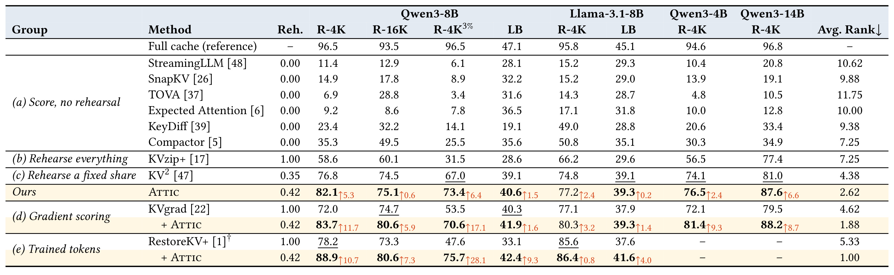
表一在四个开放模型、RULER不同上下文长度和LongBench自然文本任务上比较，多数列保留百分之五，明确标注的一列保留百分之三。Qwen3-8B、RULER-4K、百分之三预算下，完整缓存为九十六点五，KVzip+为三十一点五，Attic为七十三点四，两种排练相差四十一点九分。与调过比例的KV2相比，同列提升只有六点四；KVgrad宿主从五十三点五升到七十点六，增十七点一；带恢复令牌宿主从四十七点六升到七十五点七，增二十八点一。这些数字代表不同对照，不能把最大增益互换。百分之五下Attic在该任务得八十二点一，仍明显低于完整缓存；在Llama自然文本平均上只比KV2高零点二。作者报告纯Attic在八个设置中领先训练无关基线，属于平均指标结论，不能推为每个子任务都最佳。
完整缓存作为参考尤其必要。极端预算下相对旧方法的巨大进步不等于压缩损失消失。对于Qwen3-8B自然文本，完整缓存四十七点一，Attic四十点六，组合恢复令牌四十二点四；它们仍有剩余差距。Qwen3-14B、RULER-4K上，纯Attic八十七点六，相比KV2八十一高六点六，相比完整缓存九十六点八仍低九点二。模型变大不能自动消除极端稀疏造成的损失。此外，RestoreKV发布权重只有部分模型可用，所以表中的缺失项不是零分，不能把不同方法有不同覆盖范围的平均排名当作同一完整矩阵。
所有方法由作者在kvpress中以相同模型、提示和划分运行，基线的KV2比例在对应模型、基准、预算开发集上选择。这比拿默认比例作为唯一对照更强。RULER开发划分按种子四十二取每个长度随机百分之十，测试从剩余问题按另一种子取同样问题数；LongBench每任务洗牌后前二十五题开发，随后Qwen七十五题或Llama五十题测试。正文报告的八列并不意味着八套独立大型测试数据集，部分列共享任务形式或模型家族。论文也没有报告多随机种子置信区间，微小差值尤其需要谨慎。
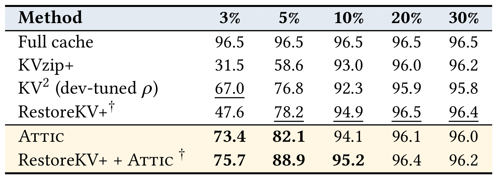
表十六验证预算变化。百分之三时Attic相对完整重读提高四十一点九，百分之五提高二十三点五，百分之十只提高一点一。到百分之二十与三十，几种强方法都接近完整缓存九十六点五，差异很小。这说明论文的价值集中在极小预算场景，不能把百分之三的收益宣传成任意比例都成立。带恢复令牌组合相对自己的宿主也从二十八点一收敛到十点七和零点三，其比较对象始终是带恢复令牌的原宿主。宽预算下偶尔出现方法排序交换，正说明选择策略的额外复杂性未必值得付出。这个扫描只对Qwen3-8B、RULER-4K展开，实际服务应按自己的质量容忍度和成本点重新画曲线。还应注意百分之三与百分之五两个极端点之间的收益变化并非线性，不能用其中一个点外推任意压缩比。表内KV2在各预算用开发集选择比例，保留率变化会同时改变其排练比例配置；因此这张表比较的是各方法规定流程在不同预算的最终表现，而不是只缩放完全相同的缓存。按同一模型列比较，百分之十预算下Attic九十四点一、KV2九十二点三、KVzip+九十三，差距已经很小；到百分之二十Attic九十六点一、KVzip+九十六，RestoreKV+则九十六点五。百分之三十纯Attic九十六点零甚至低于完整重读九十六点二，说明提升不会随预算放宽保持原有排序。带恢复令牌的Attic在百分之十为九十五点二，相对宿主九十四点九只增零点三。图一右侧强调的陡峭差距主要来自前三个紧预算点，这张附录表延伸到更宽预算后给出了结论边界。这个参照限定为测试划分的任务平均得分。
3.3 一次压缩、多次回答与真实构建成本
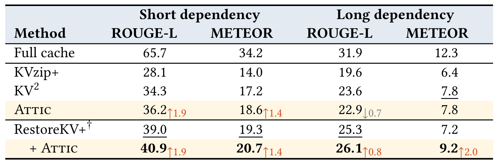
LooGLE更接近论文设定：短依赖集合是一百零五篇文档的一千九百五十一题，长依赖集合是六十篇文档的四百五十九题，同文档只压缩一次。纯Attic短依赖ROUGE-L为三十六点二，比KV2三十四点三高一点九；长依赖却是二十二点九，比KV2二十三点六低零点七，METEOR同为七点八。加入恢复令牌后短依赖ROUGE-L四十点九、长依赖二十六点一，相比原宿主分别高一点九和零点八，两项METEOR也提升。这张表使“平均领先”更具体：纯选择改进没有在长依赖所有指标上获胜，恢复稀疏缓存读出能力仍有价值；完整缓存短依赖六十五点七，离组合方法仍很远。这里的回答指标是文本相似度，不能直接等价于事实正确率。
效率没有独立结果表，原文第八页报告在单GPU上单独测十篇LooGLE文档，每篇约二十题。压缩一篇并回答它全部问题的总时间，Attic为一百二十六秒，KVzip+为一百五十四点八秒；恢复令牌组合为一百四十二点五秒，原RestoreKV+为一百五十四点六秒。生成六组问答约十一秒，这些构建工作只发生一次且在查询路径之外。这里不能把一百二十六秒当成单个问题的延迟，也不能把二十八点八秒节省理解成固定线上吞吐增益。作者说明少排练的节省大于生成成本，但只测十篇、单GPU和固定多问题数量，没有给出完整延迟分位、并发负载或摊销曲线。
文档访问频次决定这笔离线投入是否值得。若文档会回答很多问题，问答生成成本可以被复用摊薄；若它只被访问一次，构建成本更重要。缓存失效更新时也要重新生成与排练，因为旧问答可能不再对应新文档。论文展示的是静态一次性设定，并未提供更新增量策略。工程复现时应同时记录构建、每题推理、缓存占用与复用次数，否则只比较总运行时间会混淆选择算法本身和工作负载的影响。
3.4 自适应量、问答增益与任务边界
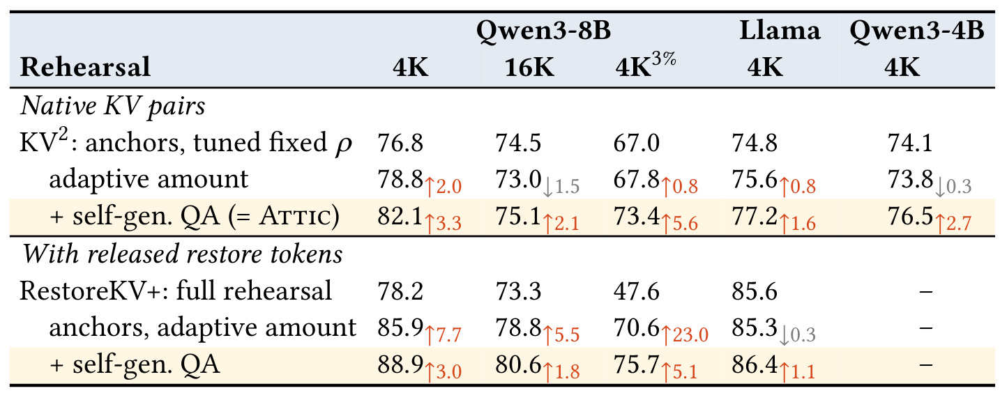
表三从调过固定比例的KV2开始，只换内容自适应量，再添加自生成问答。Qwen3-8B的四千长度百分之五预算，七十六点八到七十八点八再到八十二点一，分别对应数量改动和问答改动。百分之三预算，六十七到六十七点八再到七十三点四，问答增五点六，比宽预算更明显。但是自适应量单独在一万六千长度上从七十四点五降到七十三，在Qwen3-4B上也小幅下降，所以不是每一模块单独都稳定改善。恢复令牌组同样逐步添加，新排练量先在百分之三下增二十三，再由问答增五点一。两条路径支持问答和数量有互补作用；没有问答的版本仍留下盲区，不应把所有收益都归给句子长度估计。逐行差值采用上一行作参照，所以八十二点一旁的三点三是增加问答的边际收益，不是相对最初基线的总提升。原始表恢复令牌组在Llama自适应量也下降零点三，随后问答补回一点一；这个回退再次提示两项模块应作为完整配置验收，不能只选择对自己有利的一列解释。同一张表还允许比较问答边际收益随模型与长度变化：Qwen三点八十亿参数模型的一万六千长度，内容自适应量七十三点零加问答到七十五点一，增加二点一；Llama从七十五点六到七十七点二，增加一点六；Qwen四十亿参数从七十三点八到七十六点五，增加二点七。带恢复令牌的对应路径里，Qwen四千长度八十五点九到八十八点九增三点零，一万六千长度七十八点八到八十点六增一点八。这些跨列增量都来自同样六问配置，但幅度不同，表格支持稳定方向而非相同效果大小。
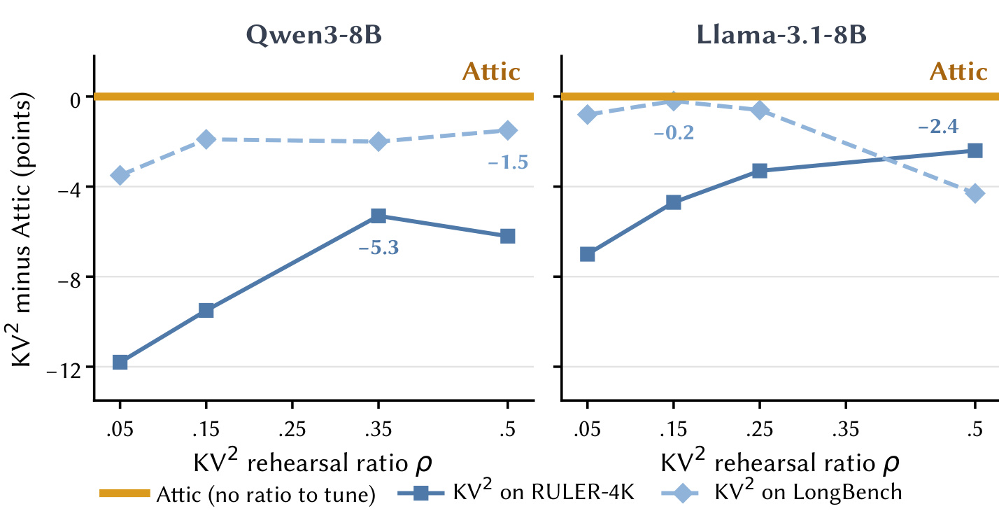
图五用KV2得分减去Attic得分表示差距，零线是Attic。不同固定比例会对RULER和LongBench产生不同影响，Llama在RULER较好的比例在LongBench反而差，说明排练数量和内容分布相关。作者为了机制分析，还扫描了测试集比例，所以该图是在事后看到测试表现的分析，并非参数选择流程；主表参数依然来自开发集。即使这样扫描，所展示各点也没有同时追上Attic，但这个观察不能成为以后允许用测试集选比例的理由。图上的零点二差距很小，缺少不确定性区间时不宜强调稳定优势；跨模型一套配置的价值更多在于减少显式比例搜索，而非证明所有新基准都无需验证。对实际混合文档仓库，不能先知道某篇属于哪个测试基准再选比例，内容自适应量的动机正是从文档本身估计排练需求。图上只扫有限比例，也没有覆盖所有可能的自适应基线，所以它排除的是所测固定比例配置，不是证明任何比例函数都不可能达到同样效果。正文给出的开发集选择也解释了曲线形状：Llama的RULER比例是零点五，LongBench比例却是零点一五；Qwen八十亿参数模型分别是零点三五和零点五。对Llama，零点五在RULER达到七十四点八，在LongBench却降到三十五点零，而Attic两项分别为七十七点二和三十九点三。Qwen扫描的最好两项约七十六点八和三十九点一，仍低于Attic八十二点一和四十点六。曲线用得分差而非绝对分数作纵轴，使两类基准能放在同一图中看取舍，但并不意味着不同基准的一分具有完全相同的任务含义。扫描只展示已运行的比例点，图中的空档不能理解成那些配置得分为零。
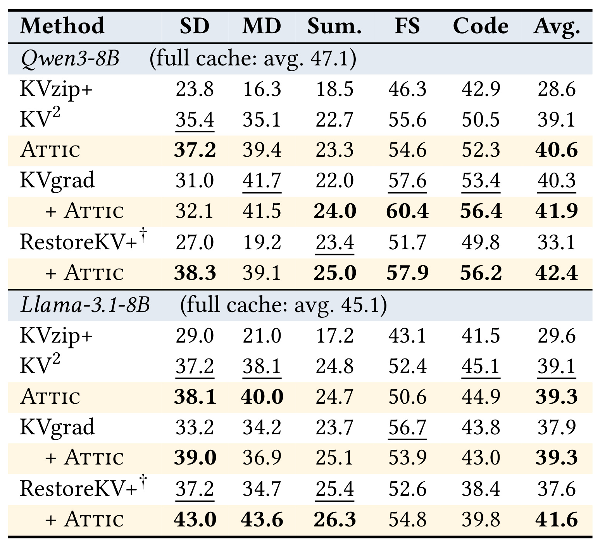
表四拆开单文档问答、多文档问答、摘要、少样本和代码任务。Qwen3-8B纯Attic单文档三十七点二、多文档三十九点四，相比KV2三十五点四和三十五点一有提高；少样本五十四点六却低于KV2五十五点六。Llama纯Attic平均三十九点三只比KV2三十九点一略高，摘要、少样本与代码列并未统一提升。KVgrad加Attic在Qwen多文档列从四十一点七到四十一点五也微降。结果因此更支持“未来读出导向有利于文档内容问答”，而不是对每种任务有同等收益。主表平均只统计十四个自然文本任务，故不能混同LongBench全部十六任务；合成段落计数和段落检索被排除的影响需要继续看附录。同样的类别平均也可能隐藏一项任务的大幅退步，附录逐任务表应与类别表一起查看。尤其代码和少样本任务的未来读出未必等同于姓名、日期类文档问答，六问提示所诱导的阅读形式可能与它们错位。这是由分任务结果提出的解释假设，作者没有通过改变问答提示证明其根因。还可以从宿主组合看类别差异。Qwen的RestoreKV+单文档二十七点零、多文档十九点二，加Attic后为三十八点三和三十九点一，问答两列变化显著；摘要二十三点四到二十五点零则较温和。对Llama，同一组合单文档三十七点二到四十三点零、多文档三十四点七到四十三点六，但代码三十八点四到三十九点八仍只是小幅改善。相比之下，Llama的KVgrad加Attic在少样本列五十六点七到五十三点九、代码四十三点八到四十三点零出现回退。表内粗体标注必须逐列读，不能把总平均的改善当成每个类别都正向。因此增量也必须沿同一模型、同一类别、同一宿主比较。
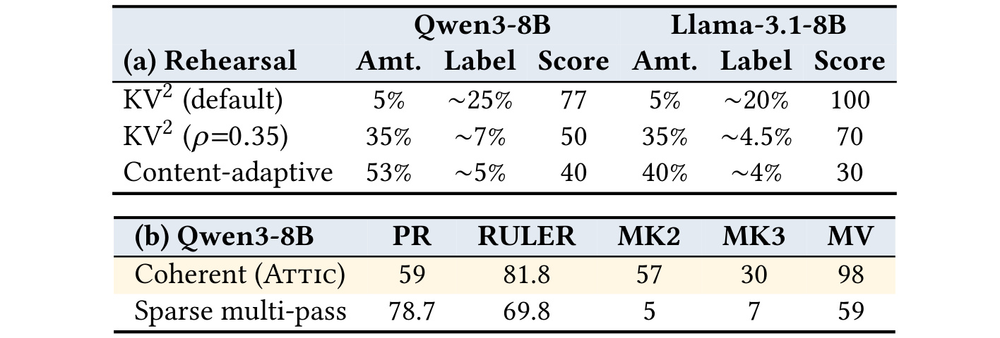
附录表十三专门解释上述合成任务。连贯排练可以从本地上下文预测段落标签，因而不会频繁回望原缓存保护这些标签；内容自适应量增长后，标签保留趋近基础比例，段落检索分数下降。把同样位置打散成多个稀疏遍次，不改变排练总词元数，却让标签必须被重新读取：Qwen段落检索从五十九升到七十八点七，但RULER从八十一点八降到六十九点八，多键第二类从五十七降到五，多值从九十八降到五十九。它展示的是预算竞争的结构性交换，不是一个同时改进两边的修补。当前Attic的阅读模式偏向不可预测的事实，编号、计数和形式位置标签可能需要另一种保护策略；正文自然文本平均的领先与这项失败同时成立。表十三的上半部分还比较了两个模型：Qwen固定百分之五锚点时标签保留约百分之二十五，检索分七十七；扩到百分之三十五时约百分之七，分数五十。Llama从约百分之二十标签保留与满分，降到约百分之四点五与七十分，再到自适应量约百分之四与三十分。这些数值直接支持可预测标签在连贯文本中失去回读保护。下半部分保持排练位置集合不变，只改变读取时的局部连续性，因而比直接减少词元数量更能隔离阅读模式的作用。多键第三类从三十降到七，多值从九十八降到五十九，与段落检索的提升方向相反。标签可预测与事实不可预测的区分不是由人为添加重要性标签得到，而是用分遍排练改变模型需要回读什么后观察出来的。它仍是单一模型开发集的受控诊断，不能当成所有文档都具有同一种结构竞争关系。
附录逐任务表也保留了复杂问题的失效证据。例如Qwen3-8B、RULER-4K、百分之三预算的多键第三类，纯Attic仍只有一点九，很多单针任务接近满分并没有解决这种组合结构。百分之五的多键第二类，纯Attic五十一点二而RestoreKV+九十三，加入Attic的恢复组合反而降到七十二点一。这些数字可在附录表五、表七核对，说明总体分数更高不保证特定绑定任务不回退。作者把机制从“缓存保留排练内容”进一步细化成“缓存保留排练实际读取的内容”，这比标题口号更有解释力，也给后续混合策略留下空间。
4. 总结
Attic-KV最值得记住的判断是：查询无关压缩不是把文档均匀缩短，而是在未知未来问题下设计一个代理阅读过程。作者用答案条目保留、排练覆盖富集、内容量控制和多遍交换实验，把排练目标与最终预算流向联系起来；然后用不训练新参数的锚点、数量估计和引用问答，给现有宿主提供更贴近未来读出的排练。收益集中在百分之三到五的极端预算，并能与梯度评分和恢复令牌结合。它没有消除完整缓存到稀疏缓存的所有差距，但为“评分越来越复杂而目标仍旧重读全文”的路线提供了一个具体可检验的替代方向。
需要保留至少四条边界。第一，真实未来查询仍未知，六组自生成问答只是代理，罕见事实和复杂绑定可能没有被覆盖。第二，句子长度是内容量启发式，表格、代码、非英语标点和格式变化可能改变分块与锚点分散程度。第三，主结果排除了LongBench的两个合成任务，附录已经证明编号检索和needle之间有取舍，不能声称全任务领先。第四，组合恢复令牌含训练过的适配器，纯Attic与组合系统的训练成本和可用模型范围要分别报告。第五，效率只在十篇文档的单GPU工作负载测量，缺少生产并发、缓存更新、延迟分位和端到端吞吐验证。第六，小幅得分差异没有多种子置信区间，本次阅读也没有独立复现，所有数值均应理解为作者报告。
后续首先应在保持开发/测试分离的条件下复现完整缓存、KVzip+、调参KV2和Attic四条预算曲线，并按任务拆分，特别跟踪多键绑定和段落编号的回退；不能只挑平均分最漂亮的配置。其次，应检查六组问答的引用正确性、问题覆盖和输出截断率，把它们与最终保留位置关联起来，确认错误代理会如何影响预算。再次，应按文档访问次数绘制构建成本摊销曲线，独立测压缩耗时、单题推理、显存与吞吐，并测试文档更新后的重建成本。最后，值得尝试保留少量结构标签预算或分配多种阅读模式，但这属于后续研究设想，论文没有证明混合模式一定优于当前算法。
对长期缓存系统而言，实用启发是先定义哪些未来读出值得被保护，再选择能诱导这些读取的排练，而不是把“更完整地重读”当作默认目标。真正落地还需要根据文档类型和任务风险决定极端压缩是否合适：丢失一般叙述和丢失一个关键数值的后果并不相同。Attic把这个问题变成可观测的保留比例与任务表现，从而可以讨论具体失败而非只看内存节省。作为精读结论，四十一点九是特定设置相对全文排练的增益，十七点一和二十八点一是不同宿主的组合增益；把对照、预算和任务放在数字旁边，才是这篇论文可迁移的证据。
实际阅读优先级可以按证据强度安排：先用表一确认预算与对照，再用表三判断两个模块各贡献什么，最后用附录表十三检查目标改变后的代价。标题中的自我测验类比帮助理解设计动机，机制是否成立仍要由条目存活和任务回退来判断。后续复现若只复制问答提示，却把句子直接当排练单元、或在每个头独立留固定比例，都可能改变作者报告的算法，比较之前应先核对这些细节。